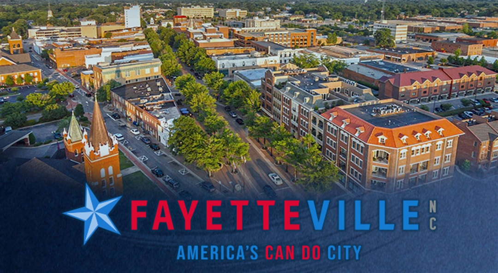
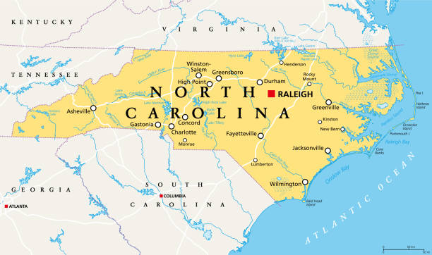

Home of the Special Forces, and more importantly, the magnificent me, Fayetteville is...honestly kinda empty for how large it is. After living here for the last 19 years (moving here when I was 2) its honestly pretty strange how little there is to do here, seriously. Including the counties that are partially within Fayetteville's lines, we have a population of 400,000 people (around 250,000 strictly staying within these lines). Being the 6th largest city in North Carolina, the most memorable thing here, I can come up with, is the downtown festivals.
Now this isn't to say it has nothing, as I mentioned we have those festivals, we have the Airborne and SpecOps Museum, and then smaller places like Gillis Hill Farm (of whom I am employed) and an amazing asian portion of town around Yadkin Rd (with some of the best food in the city). Then, of course, there is FTCC, which is...a college of all time (not to say anything bad about it of course, I'm very grateful for my education and the fact that it's way cheaper than any other place in the state).
By far though my favorite part of Fayetteville, and the thing that makes it my favorite city, is just the friends I've made here. For example, my best friend Isaac, whom I have known for over 10 years, and someone I can earnestly call my brother, plus his family who feel like my own. Or the Gillis', whom I've been close to for the last 5 years, shared meals with, and exchanged gifts. Then of course there is my family, my loving grandmother and grandfather especially, who mean more than the world to me. I honestly don't feel that close to this city, but because of the people inside of it, I couldn't be given anything that could tear me away from it.
Fayetteville is most known for it's special forces base, and pretty much nothing else. Almost all history you can find on Fayetteville will also be centered on its military history, but in 1831, there was a massive fire that spread throughout Cumberland County, labeled as the...second worst fire in the Nation's at-that-time current history. Despite this, no one was reported dead in the fires whatsoever, ain't that nifty. On a more somber note, Fayetteville also housed and trained 200,000 soldiers from 1966-1970, before sending them off to the Vietnam War. This also came with a massive increase in crime, drug addiction, and anti-war protests, causing Fayetteville to then develop the name "Fayettenam."

Dogwood Festival.
Small "hole in the wall shops" have good food.
Gillis Hill Farm Tour + Ice Cream.